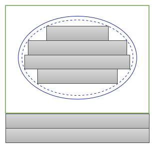
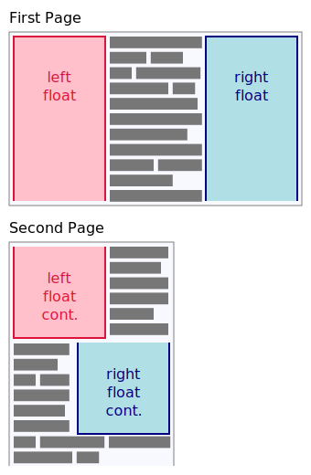

class: center, middle # CSS Layout API! ##### ikilpatrick@ Apr 2018 --- # Use-cases 🤔 ("blocky") - Masonry - Constraint Based Layouts - Subgrid --- # Use-cases 🤔 (non-obvious) - Container queries - (efficent queries without having to perform style-recalc or full layouts). - Layout Animation Transitions - (need to perform layout at each time-step, but can perform more targeted recalc-styles). --- # Use-cases 🤔 (text) - Next phase of the API will allow "line-by-line" layout.  --- # Use-cases 🤔 (fragmentation) - And the phase after that fragmentation  --- # Getting started ```html <style> #some-div { display: layout(example); } </style> <script> CSS.layoutWorklet.addModule('layout.js'); </script> ``` ```js // layout.js registerLayout('example', class { *intrinsicSizes() {} *layout() {} }); ``` --- class: center, middle <iframe src="1.html" frameborder="0"></iframe> --- class: center, middle <iframe src="2.html" frameborder="0"></iframe> --- class: center, middle <iframe src="3.html" frameborder="0"></iframe> --- class: center, middle <iframe src="4.html" frameborder="0"></iframe> --- # Missing Parts - edges ```js registerLayout('edges', class { *intrinsicSizes() {} *layout(_, edges, __, ___) { edges.scrollbar.inlineStart; // scrollbar left size. edges.all.block; // border-scrollbar-padding top and bottom size. } }); ``` --- # Missing Parts - additional constraints (1) ```js registerLayout('additional-constraints', class { *intrinsicSizes() {} *layout(children, edges, constraints, styleMap) { const child = children[0]; // Sending additional constraints to child. const fragment = yield child.layoutNextFragment({ availableInlineSize: 100, /* zero if not specified */ availableBlockSize: 200, /* zero if not specified */ percentageInlineSize: 50, percentageBlockSize: 50, }); } }); ``` --- # Missing Parts - additional constraints (2) ```js registerLayout('additional-constraints', class { *intrinsicSizes() {} *layout(children, edges, constraints, styleMap) { // Receiving constraints from parent. const { availableInlineSize, availableBlockSize, percentageInlineSize, percentageBlockSize } = constraints; } }); ``` --- #Missing Parts - arbitary data passing (1) ```js registerLayout('arbitary-data', class { *intrinsicSizes() {} *layout(children, edges, constraints, styleMap) { // Receiving data from parent. const {floatingObjects} = constraints.data; // data passed in from parent. const child = children[0]; // Sending data to child. const fragment = yield child.layoutNextFragment({ data: {floatingObjects: []} }); } }); ``` --- #Missing Parts - arbitary data passing (2) ```js registerLayout('arbitary-data', class { *intrinsicSizes() {} *layout(children, edges, constraints, styleMap) { const child = children[0]; // Receiving data from child. const fragment = yield child.layoutNextFragment({}); const {floatingObjects} = fragment.data; // Sending data to parent. return {autoBlockSize: 0, data: {floatingObjects}}; } }); ``` --- class: center, middle # The Future! ##### (part 1) --- # Line-by-line Layout ```js registerLayout('lines', class { static get layoutOptions() { return {childDisplay: 'normal'} } *layout([child]) { let breakToken = null; const childFragments = []; do { const fragment = yield child.layoutNextFragment({ availableInlineSize, breakToken }); childFragments.push(fragment); breakToken = fragment.breakToken; } while (breakToken); // Indent the first line. childFragments[0].inlineOffset += 20; } }); ```